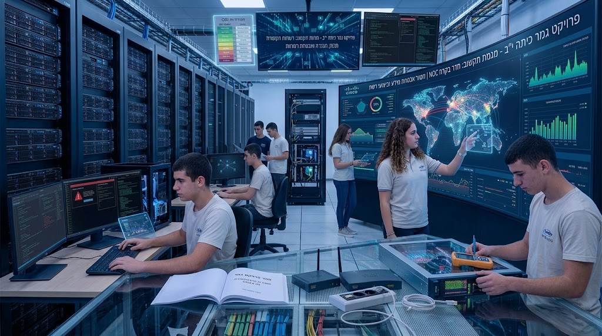

כל חומרי העזר לפרויקט הגמר במקום אחד: עבודות דוגמה של תלמידים, טפסים והנחיות רשמיים, ותוכניות המבנים המשמשות להקמת הרשת בפאקט טרייסר. לחצו על תיקייה כדי לפתוח אותה ולהוריד קבצים.

ארבע עבודות גמר מלאות של תלמידים, לצפייה והשוואה — כדי לראות איך נראית עבודה שלמה ואיך אפשר לגשת לכל אחד מ־75 סעיפי הטופס בפועל.
טופס המעקב הרשמי אחר 75 סעיפי הפרויקט, ואוסף שאלות לקראת בחינת הבגרות — לשימוש שוטף לאורך כל תהליך העבודה.
מפות ותשריטי קומות לשימוש בבניית הטופולוגיה הפיזית בפאקט טרייסר — בסיס להצבת נתבים, מתגים, ארונות תקשורת וציוד קצה בסניפים.
חומרים נוספים שלא נכנסים לקטגוריות האחרות — קבצי עזר, תבניות ומצגות רקע שרלוונטיות לכלל שלבי הפרויקט.
לתלמידים: הקבצים בכל תיקייה נפתחים ישירות בגיטהאב — אפשר לצפות בהם בדפדפן או ללחוץ על Download raw file כדי לשמור אותם למחשב.